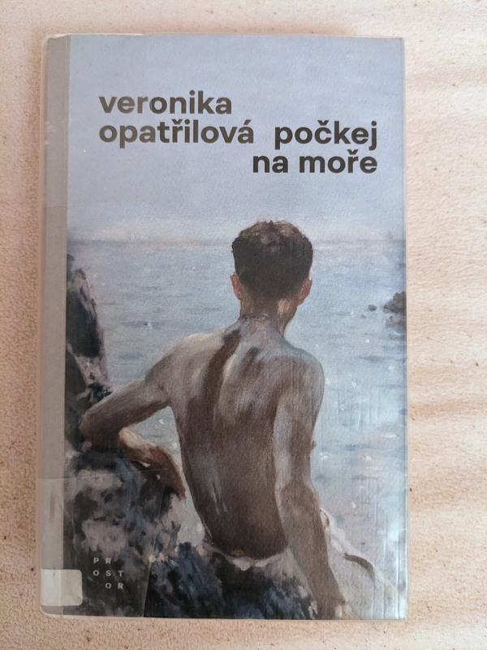
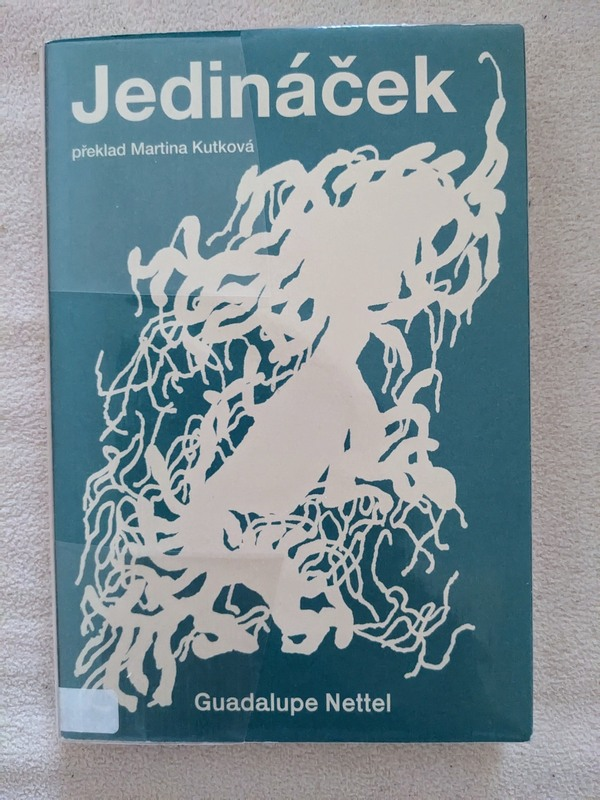
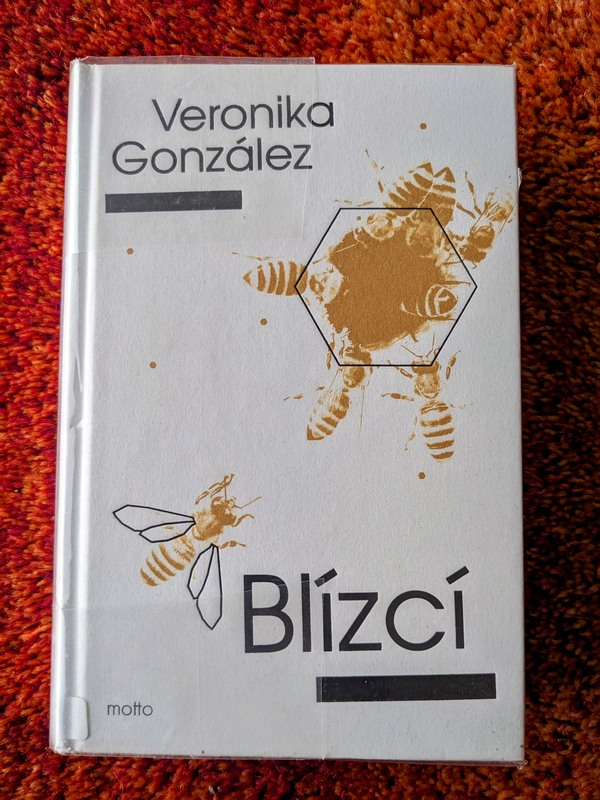
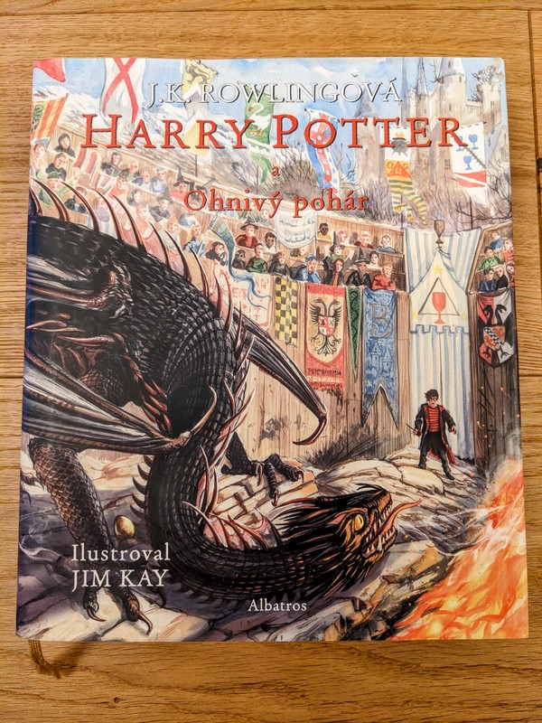
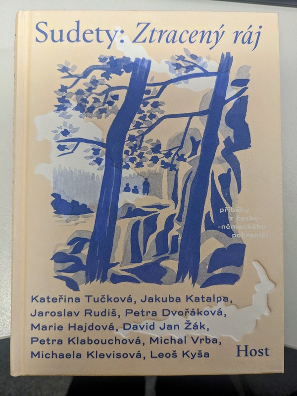
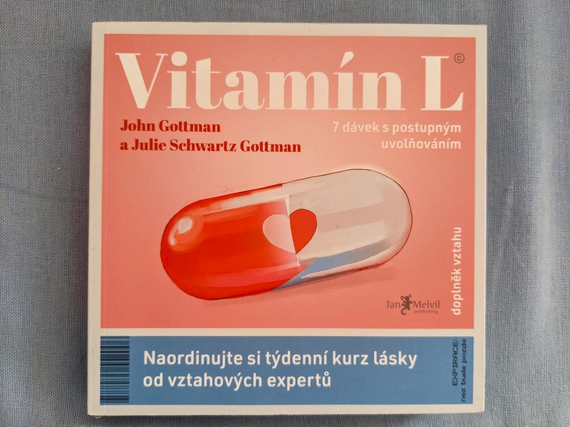
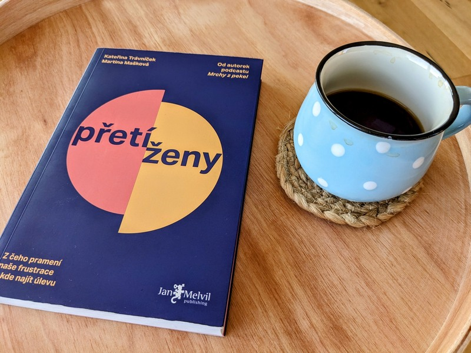

Ne že bych měla ve zvyku si úplně dávat předsevzetí, ale do letošního roku přece jen vstupuju s přáním začít zase více psát a celkově věnovat víc času činnostem, u nichž cítím to příjemné „flow“. Tak doufám, že se to trochu odrazí i tady na blogu a nebo třeba mému psaní dám nějakou novou formu, kdo ví 😊? Pro začátek tu mám každopádně pravidelný přehled toho nejzajímavějšího z mé knihovničky za uplynulou zimu.
Veronika Opatřilová – Počkej na moře
Řekneš: “Ale tak je to dobře, že nic nezůstává stejné,” a já vím, že mi rozumíš, ze všech lidí právě ty, protože kdyby všechno zůstávalo stejné, jaký význam by měly všechny ty nezapomenutelné okamžiky, které znamenají věčnost?
Veronika Opatřilová je jedním z mých literárních objevů uplynulého roku. Počkej na moře je poetickým romantickým příběhem zakázané lásky mezi univerzitním profesorem literatury a výměnným studentem ze Švédska, který se odehrává na konci 60. let v Anglii, kdy homosexuální vztahy byly společností stále vnímány jako veliké tabu. Co na románě zaujme na první pohled je originální du-forma a celkově opět jazyk, jakým autorka píše, i důraz na prostředí, do něhož je děj zasazen. V Příběhu L. to byl les, do něhož hlavní hrdina utíká – tady důležitou roli sehrává, jak ostatně sám název napovídá, moře. Garantuju vám, že na konci knihy zatoužíte navštívit ostrov Wight, Brighton a další místa, o kterých zde budete číst – natolik podmanivě autorka vykresluje jejich atmosféru. Počkej na moře je výjimečný román o krásnu, lásce, bolesti i konečnosti, který se dotkne každé citlivé duše…
Možná máš pravdu. Možná opravdu jen hledám něco nezachytitelného, co mě naplňuje pocitem života, něco skutečného, intenzivního. Jak jinak bych ale dokázal najít podobný pocit než tak, že nebude trvalý? Jedině to, co skončí, může trvat věčnost.

Guadalupe Nettel - Jedináček
Možná už jste trochu unuděni tou řadou knih na téma mateřství, jeho různé podoby a úskalí, které v posledních letech na knižním trhu vychází. Jedináček je ale přece jen v něčem jiný. Mexická spisovatelka Guadalupe Nettel píše úsporně, přesto na několika málo stranách dokáže rozehrát hned několik životních osudů. Ten ústřední se točí okolo vypravěčky Laury, která si kdysi se svou kamarádkou Alinou slíbila, že nepodlehnou společenskému tlaku a dobrovolně se vzdají role matky. Zatímco Laura se tohoto svého předsevzetí v následujících letech drží, Alina po dítěti časem zatouží tak moc, že kvůli peripetiím s otěhotněním neváhá absolvovat několik pokusů o umělé oplodnění. Její touha po mateřství nakonec přinese do života Aliny i jejího partnera nečekaný zvrat… Laura se v mezičase seznamuje s komplikovanou sousedkou Doris a jejím osmiletým synem Nicolasem, který trpí záchvaty vzteku, a rozhodne se, že se pokusí oběma pomoci. Autorka přináší neotřelý pohled na různé aspekty i podoby mateřství, především ale píše o potřebě lásky, přátelství a komunity. Přestože je příběh Aliny drásající a tíživý, četba vás nerozloží, ale naopak pohladí po duši. A takových knih rozhodně potřebujeme více :-)!

Veronika González - Blízcí
Další vynikající autorka (můžu-li tak soudit na základě pouhých dvou románů, které dosud vydala) z českých luhů a hájů a byť Blízcí přináší už trochu otřepané téma toxických rodinných vztahů, stále je na tomto poli prostor pro osobitý přístup a originalitu. Minimálně ta pointa celého příběhu je v tomto případě skutečně nečekaná (i když za mě už dost přitažená za vlasy, nebudu vám ale vyzrazovat žádné spoilery :-D). Hlavní hrdinkou příběhu je fotografka Barbora, která se v životě ocitá v jakési slepé uličce – odstěhovala se z ruchu a možností velkoměsta na venkov za svým partnerem Igorem. Igorova rodina, která ve vesnici žije, jí však postupně začíná ze života dělat peklo. Krok za krokem Bára odhaluje podhoubí pokřivených rodinných vztahů a dochází jí, že aby ji úplně nestrávily, musí se konečně začít bránit. Při tom nachází nečekaného spojence ve švagrové Petře, která neskrývá navenek pouze to, že je obětí domácího násilí, ale má i jiné nečekané tajemství…

J. K. Rowwlingová - Harry Potter a Ohnivý pohár
Ohnivý pohár je asi jedna z mých nejoblíbenějších HP knížek a na prvním místě mám jednoznačně i její filmové zpracování. Oli si ji přál za první vysvědčení a málem s námi musela odcestovat i na Rhodos (kam jsem nakonec prozíravě přibalila čtečku). Četli jsme poctivě skoro každý večer na dobrou noc, takže nám trvalo ji přelouskat asi jen půl roku :-)

Sudety: Ztracený ráj
Tento soubor povídek současných českých autorů zvučných jmen, které spojuje společné téma česko-německého pohraničí a vztahů zdejších obyvatel z dob, kdy ještě nebyly pošramocené druhou světovou válkou, mi doporučila a zapůjčila kolegyně z práce a opravdu se mi trefila do vkusu. Formát povídky je za mne královská disciplína, kdy na omezeném prostoru musí autor rozehrát příběh, vtáhnout čtenáře a vybrousit pointu. V Sudetech se to zdařilo skvěle. Každá povídka má přitom jinou atmosféru, odehrává se v různých pohraničních lokacích a má jiný vypravěčský styl. Příběh, který se mnou nejvíce rezonoval a zároveň i rozesmál svým vyústěním, byla povídka Petry Klabouchové S křížkem po funuse. Nezklamala mne ani Kateřina Tučková, jejíž závěrečná emotivní povídka Čas raků, v níž se hlavní hrdina vrací po letech na místo své rodné vesnice Mušov, která musela ustoupit stavbě vodní nádrže Nové Mlýny, je dokonalou tečkou celé knihy. Povídkový soubor je vymazlený i po vizuální stránce, a to zejména díky použitému modrotisku a ilustracím Jaromíra 99, které jsou inspirované dobovými fotografiemi.

John Gottman, Julie Schwartz Gottman – Vitamín L
Tuto „melvilovku“ jsem ulovila na povelikonočním výprodeji přímo v nakladatelství a je to rozhodně jedna z těch knih, která se neztratí v žádné knihovničce. Jedná se o poměrně útlou a ryze prakticky orientovanou „příručku“ od uznávaných vztahových terapeutů, která nabízí týdenní „kurz lásky“, který by měl zlepšit váš partnerský vztah. Pokud si vzpomínáte na 7 principů spokojeného manželství od Gottmanových, o kterých jsem tu kdysi psala, dá se říct, že Vitamín L je jakási zhuštěná a více prakticky orientovaná verze této knihy. Nenabízí rozvláčnou teorii, ale zcela konkrétní tipy, které můžete okamžitě aplikovat. Ve většině případů se nejedná o nic objevného, ovšem přiznejme si, že v pěně všedních dní není vždycky chuť hledat, za co druhého můžeme ocenit, ani inspirace pro hluboké diskuze jiného typu, než kdo zítra vyzvedne děti a kdo zaplatí poplatek za popelnice 8-). Minimálně vás tedy čtení této knihy může ponouknout k vykročení ze zaběhlých stereotypů a k práci na sobě, což se koneckonců hodí, ať už řešíte jakýkoliv vztah :-)

Kateřina Trávníček, Martina Mašková - Přetíženy
Letos jsem si od Ježíška přála jen jednu jedinou knihu, a to Přetíženy – titul, který rezonoval sociálními sítěmi už nějakou chvíli před svým vydáním a myslím si, že zcela oprávněně. Těch témat, která tato knížka otevírá, je tolik! Od čistě vědeckého vhledu do fungování naší nervové soustavy přes vysokou citlivost, fenomén intenzivního rodičovství… Je to kniha, kterou by si měl přečíst skutečně každý – ne jen ženy a matky, i když zejména ony asi v knize najdou tu tolik potřebnou úlevu a pochopení, kterých se jim od společnosti obvykle tak žalostně nedostává. Kniha je proložena příběhy konkrétních žen a garantuju vám, že se v řadě situací důvěrně poznáte. Pokud autorky sledujete na sociálních sítích, možná těch nových informací pro vás nebude tolik, ale je jen dobře, že vznikla publikace, která vše podstatné shrnuje na jednom místě a z mentálního přetížení žen je konečně téma, které začíná víc a víc rezonovat společností.
